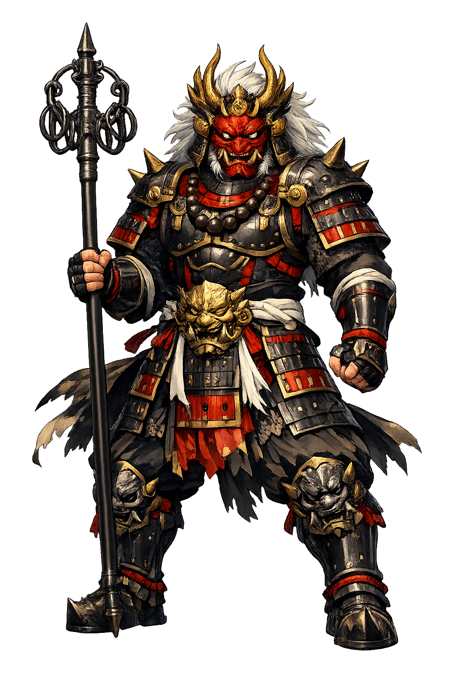

Stories of Goshin
Because goshin (御神, 五神) is a generic term — 'the august gods,' 'the five gods' — it has no single canonical mythology. Its stories are the stories of the systems the word serves: the esoteric Buddhist mandalas that seat five buddhas across the directions, the yin-yang cosmology that assigns five phases to time and space, the shrine traditions that honor local groups of five, and the architecture that stacks five elements into a pagoda. The accounts below are representative, not exhaustive; the tradition itself insists on this.
When Kūkai returned from Tang China in 806 CE he carried two great mandalas, and the Womb-Realm (Taizōkai) mandala painted five buddhas enthroned at its heart: Dainichi Nyorai (Mahāvairocana) of the Law at the center, attended by four more, with the full assembly of bodhisattvas radiating outward like a celestial court. In ritual the practitioner 'enters' the mandala to be born into enlightenment — the womb is taken literally: the devotee is conceived, gestated, and delivered as a buddha within Dainichi's diagram. In this setting the five are honored collectively as goshin, the august five, and the mandala itself is a goshin-zu, an image of the divine assembly. (Abe, The Weaving of Mantra, on Kūkai's transmission.) The mythology is spatial rather than narrative: salvation imagined as finding one's proper seat in an ordered cosmos.
Guarding the mandala's edges stand the Five Wisdom Kings (godai myōō): Fudō Myōō immovable at the center with sword and lasso, Gōzanze Myōō trampling the three traitors in the east, Gundari Myōō hurling his serpent noose in the south, Daiitoku Myōō riding the water-buffalo demon in the west, and Kongōyasha Myōō keeping the northern gate. These wrathful figures are not demons but compassion at full pressure — the ferocity a buddha assumes to break the attachments that gentleness cannot reach. Esoteric exegesis gives them the fearsome task of subduing the very passions they personify, so that the five protectors embody the teaching that rage, rightly aimed, guards the dharma. In devotional usage they form another goshin grouping, invoked over the flames of the goma fire ritual. The myth's logic is inverted holiness: the terrifying face is the guardian's, not the enemy's.
The yin-yang bureau (Onmyōryō), founded at the Japanese court on Chinese models in the seventh century, organized the world through the five phases (gogyō): wood, fire, earth, metal, water — each tied to a direction, a season, a color, and an organ of the body. Its masters — of whom Abe no Seimei (921–1005) is the most famous — cast horoscopes, chose lucky days, and countered the kimon, the 'demon gate' of the northeast through which malevolent influences were thought to enter. Five-phase reasoning is the native soil of every Japanese 'five divine spirits': a goshin grouping is a devotional reading of the same cosmology that scheduled weddings and predicted eclipses. The system's power was administrative as much as spiritual — court ritual and the state calendar alike ran on its arithmetic.
The built form of the five is the five-story pagoda (gojūnotō), whose storeys are read from top to bottom as earth, water, fire, wind, and void — the esoteric Buddhist five great elements (godai) descending into matter. The oldest surviving example stands at Hōryūji near Nara, raised in the seventh century and among the oldest wooden buildings on earth; later pagodas at Tōji in Kyoto and the Tōshōgū at Nikkō turned the same fivefold skeleton into skyline. A pagoda is thus a goshin made architectural: five protective powers stacked in order, crowned by the spire (sorin) whose nine rings answer the nine worlds. Earthquakes have toppled temples for a thousand years, yet the great pagodas, flexibly jointed, have largely stood — a fact the faithful have never failed to note.
Protection, Direction, and Numerical Order
Goshin means 'august gods' or 'five gods' — a class of divine arrangements rather than a single deity. In Japanese religious thought, the number five organizes space, body, color, element, and virtue. A goshin may name the five buddhas of the Womb-Realm mandala, the five wrathful wisdom kings, the five phases of yin-yang divination, or a village's own group of protective kami. The term serves the systems; it never escapes them.
Five deities assigned to the cardinal directions and center — buddhas in the mandala, kami at the regional shrine.
The esoteric Buddhist godai (earth, water, fire, wind, void) and the Onmyōdō gogyō (wood, fire, earth, metal, water) made divine.
Shrines and rituals invoke five kami to ward off misfortune; the quincunx leaves no approach unguarded.
The number five structures Japanese cosmology, ritual, and iconography — five colors, five phases, five festival days.
From the original script to the living URL
五神
The name in its original Japanese form. Goshin (五神) is attested in the source tradition — “Five gods”. Its original diacritics and script distinctions carry the full phonetic and orthographic weight of the source tradition.
goshin
The plain goshin form is identical to the Unicode restoration. Because this name is already written in Latin letters, no diacritics, stress, or script information were lost — only capitalization differs.
Goshin
The Unicode restoration does not need to recover lost marks for Goshin. Its value is canonical spelling and consistent cataloguing, not the reconstruction of erased orthography. The domain is readable as-is to both DNS and humanity.
Goshin.com
This restoration is written entirely in ASCII letters — no Punycode encoding stands between Goshin and the DNS. The domain reads identically to machines and to human eyes.
Owned, ideal, and ASCII forms of Goshin
Goshin
Restores 五神. The full Unicode restoration. goshin.com is not in the PuniCodex collection — it is watched for release; if it drops, this temple upgrades to an owned flagship.
How Goshin was spoken
How Goshin is preserved in writing
A bespoke provenance study for Goshin is being prepared by the PUNICODEX scholarly team.
Contribute scholarly provenance →Goshin teaches a quiet lesson about the sacred: that it is often plural before it is singular. A single god must be approached as a person — flattered, bargained with, loved. Five gods arranged across the directions ask nothing personal; they simply guarantee that no approach to the world is left unguarded. The quincunx — four corners and a center — is one of humanity's oldest diagrams of complete safety, older than Japan, older than Buddhism, found on gaming boards and cosmologies across Eurasia.
Enter Extended Lore